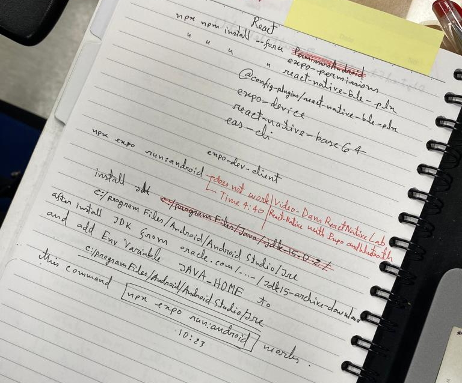

Install nodejs from official installer.
Install homebrew
/bin/bash -c "$(curl -fsSL https://raw.githubusercontent.com/Homebrew/install/HEAD/install.sh)"
brew install openjdk@11
Create or edit ~/.zsh_profile
export PATH=$PATH:/Users/jibon/.gem/ruby/2.6.0/bin
export PATH=$PATH:/opt/homebrew/bin
export PATH="$HOME/.jenv/bin:$PATH"
eval "$(jenv init -)"
export ANDROID_HOME=/Users/jibon/Library/Android/sdk
export PATH=$PATH:$ANDROID_HOME/emulator
export PATH=$PATH:$ANDROID_HOME/platform-tools
export PATH="/opt/homebrew/opt/openjdk@11/bin:$PATH"
source ~/.zsh_profile
Then I tried install jenv. It did not goes well.
brew install jenv
jenv doctor # To check jenv errors
sudo softwareupdate --install-rosetta # It was mandatory
brew install AdoptOpenJDK/openjdk/adoptopenjdk8 # I think we need openjdk11.
This command
/usr/libexec/java_home -V outputs below:
Matching Java Virtual Machines (2):
11.0.20.1 (arm64) "Homebrew" - "OpenJDK 11.0.20.1" /opt/homebrew/Cellar/openjdk@11/11.0.20.1/libexec/openjdk.jdk/Contents/Home
1.8.0_292 (x86_64) "AdoptOpenJDK" - "AdoptOpenJDK 8" /Library/Java/JavaVirtualMachines/adoptopenjdk-8.jdk/Contents/Home
It seems that 2nd installation was invalid. But
java --version command showing a better result:
openjdk 11.0.20.1 2023-08-24
OpenJDK Runtime Environment Homebrew (build 11.0.20.1+0)
OpenJDK 64-Bit Server VM Homebrew (build 11.0.20.1+0, mixed mode)
brew install --cask android-commandlinetools
Following command did not goes well as I remembered:
sdkmanager "system-images;android-30;google_apis_playstore;arm64-v8a" "platform-tools" "platforms;android-30"
jenv doctor
jenv add /Library/Java/JavaVirtualMachines/adoptopenjdk-8.jdk/Contents/Home
jenv global openjdk64-1.8.0.292
jenv doctor
Continue installing.
brew install --cask android-commandlinetools
Do not know if following command works or not:
sdkmanager "system-images;android-30;google_apis_playstore;arm64-v8a" "platform-tools" "platforms;android-30"
brew tap homebrew/cask
brew update
brew doctor
brew untap homebrew/cask
brew config
echo $JAVA_HOME
sudo cp ~/Library/Android/sdk/platform-tools/adb /usr/local/bin
brew install gradle
java version
brew install openjdk@11
sudo ln -sfn /opt/homebrew/opt/openjdk@11/libexec/openjdk.jdk /Library/Java/JavaVirtualMachines/openjdk-11.jdk
echo 'export PATH="/opt/homebrew/opt/openjdk@11/bin:$PATH"' >> ~/.zsh_profile
source .zsh_profile
Creating app
npx create-expo-app -t expo-template-blanc-typescript expo-ble-sample
cd expo-ble-sample
npx expo install react-native-ble-plx @config-pluins/react-native-ble-plx
npx expo install expo-device react-native-base64
npx expo install @shopify/react-native-skia
add following to .zsh_profile
export GEM_HOME=~/.gem # or $HOME/.gem
export PATH=$GEM_HOME/bin:$PATH
source ~/.zsh_profile this profile is not automatic yet.
Continue
cd ios
gem install active-support -v 6.1.7.6
gem install cocoapods --user-install
cd ..
npx expo prebuild
npx expo install expo-dev-client
npx npm install --global eas-cli # or sudo npx npm install --global eas-cli
npm install --save react-native-device-info
npm i --save-dev @types/react-native-base64 #Support suggestion from VSCode
Following build command did not work because of apple paid developer account needed.
eas build --profile development --platform ios
React Native environment-setup Docs
Everytime when open a new terminal shell we had to
source ~/.zsh_profile .
git clone https://github.com/thedevenvironment/expo-router-typescript.git
cd expo-router-typescript
npx expo start
At this stage it shows errors. We need to install expo for this project.
sudo npm install
Or may be this one first.
npm install -g expo-cli
Install Android Studio. create a new Env Variable
ANDROID_HOME where set the path
C:/Users/jibon/AppData/local/Android/sdk . Please
correct this path if username is different. Also add path
C:/Users/jibon/AppData/local/Android/sdk/platform-tools to system PATH variable.
Need to restart the command prompt and run
npx expo start from inside app location.
This app source is downloaded from github so it may have many packages dependencies.
So we need to run
sudo npm install so it will install the packages from
package.json .
We added a login page in the app.
1. Create a folder and index file as app/login/index.tsx . Context is:
export { default } from 'src/screens/Login'
So the real code is in src/screen/login.tsx
Problem installing react-native-elements @rneui/themed @rneui/base on ther PC
I managed to get both versions updated using 2 methods. However, I am not sure if something else is going to break down the track!?
method-1: install themed first; then, install base:
npm uninstall @rneui/themed @rneui/base
npm install @rneui/themed
npm install @rneui/base
method-2: using --force:
npm uninstall @rneui/themed @rneui/base
npm install @rneui/themed @rneui/base --force
i also managed to get a workaround running with using overrides in package.json:
"overrides": { "@rneui/themed": { "@rneui/base": "4.0.0-rc.8" } }
I could not import useState from react "
import React, { useState } from 'react'; "
Then used command
npm i @types/react@latest --force inside project directory.

npm config set legacy-peer-deps true